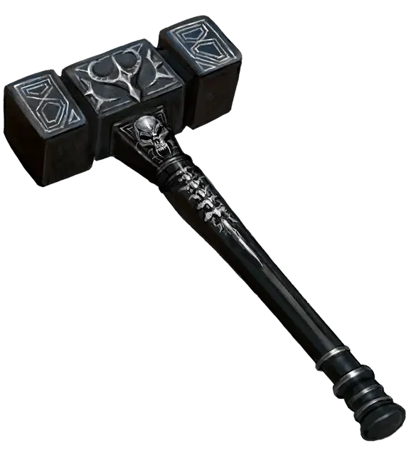

Маталоток
Matalotok
Оружие (боевой молот), легендарное (требуется настройка)

Рекомендованная стоимость от 50 001 зм
Маталоток, Отец Мороза, - древний молот, созданный Тримом, Богом ледяных гигантов. Любимое оружие повелителя демонов Костччи [kostchtchie], Маталоток холоден на ощупь и окутан дымкой.
Вы получаете иммунитет к урону холодом, пока держите Маталоток. Всякий раз, когда вы наносите урон существу, молот испускает волну сильного холода в сфере радиусом 30 футов. Каждое существо в этой области получает 10 (3к6) урона холодом.